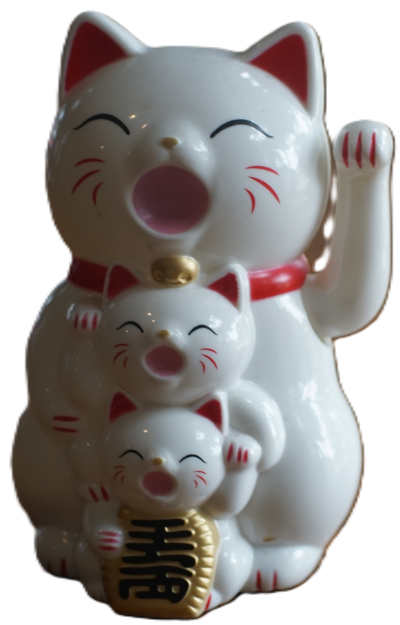

Les détails de mon lucky cat :
- Tête blanche et petits yeux noirs
- Joues et oreilles rouges
- Corps rouge et fleurs roses
- Petite ligne bleue
- Clochette dorée
Mon lucky cat est une petite figurine en forme de chat que je trouve vraiment mignonne. Sa tête est blanche avec des petits yeux noirs et des détails rouges sur les joues et les oreilles. Son corps est rouge et décoré de petites fleurs roses et de formes blanches. Il y a aussi une petite ligne bleue entre sa tête et son corps. En dessous, on retrouve une petite clochette dorée qui ajoute une belle touche à la figurine. J'aime beaucoup ses couleurs et son apparence adorable. Le lucky cat représente la chance, le bonheur et la prospérité.